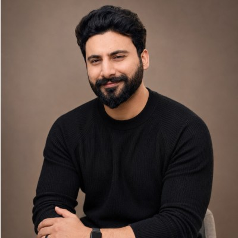

Full Stack Developer and SEO Consultant from Lahore, Pakistan — blending technical precision with data-driven marketing to help businesses grow sustainably.

I'm a Full Stack Developer and SEO Consultant based in Lahore, Pakistan. With a Bachelor's in Computer Science from Superior University, I blend technical precision with data-driven marketing to help businesses grow sustainably.
Over the past 6+ years, I've worked with 300+ clients across Pakistan, Australia, and the US — managing $10M+ in ad spend and consistently delivering 3× growth in leads and conversions. My expertise spans Technical SEO, Conversion Optimization, and Full Stack Development.
I also have expertise in cyber risk management, which helps me protect the websites and data of my clients. I'm passionate about building digital systems that don't just look great — they perform. My aspiration is to be an entrepreneur who creates opportunities, not just takes them.
Clients served across 60 of the world's 193 countries — and counting. Home base pinned in Lahore.
I don't believe in vanity metrics, copy-paste audits, or "best practice" theatre. Here's what actually shapes the work.
Decisions backed by Search Console, GA4, and CRM data — not gut feel or what worked for someone else's brand.
Crawl budget, indexation, Core Web Vitals, schema. Boring technical work compounds long after a campaign ends.
I measure success in qualified leads and pipeline impact. Vanity keyword counts are a distraction.
White-hat tactics, defensible architecture, and security-aware builds — nothing that breaks at the next algorithm update.
Monthly Looker Studio dashboards tied to your business KPIs. No black boxes, no "trust me" reporting.
I'd rather launch a 70% solution this week and improve it than perfect something for two quarters.
A quick path through the last decade — how I went from writing my first line of code to managing global growth portfolios.
Built first WordPress and custom PHP sites for local Lahore businesses. Picked up HTML/CSS/JS the hard way — by shipping client work on a deadline.
Started leading SEO and digital marketing for Australian clients. First exposure to enterprise-scale Search Console data and paid social attribution.
Bachelor's in CS — built strong fundamentals in databases, networks, and security that still inform how I think about web architecture today.
Launched as Co-Founder & CTO — leading technology and SEO strategy across the client portfolio, focused on startups and growth-stage companies.
Scaled paid acquisition for DTC and SaaS clients across Meta, Google, and TikTok. Built creative-testing systems that survive iOS 14 attribution chaos.
Currently selectively taking on growth and full-stack engagements with founders who want a long-term partner, not a vendor.
If you're looking for a growth partner who handles both the technical foundations and the marketing motion — I'd love to talk.